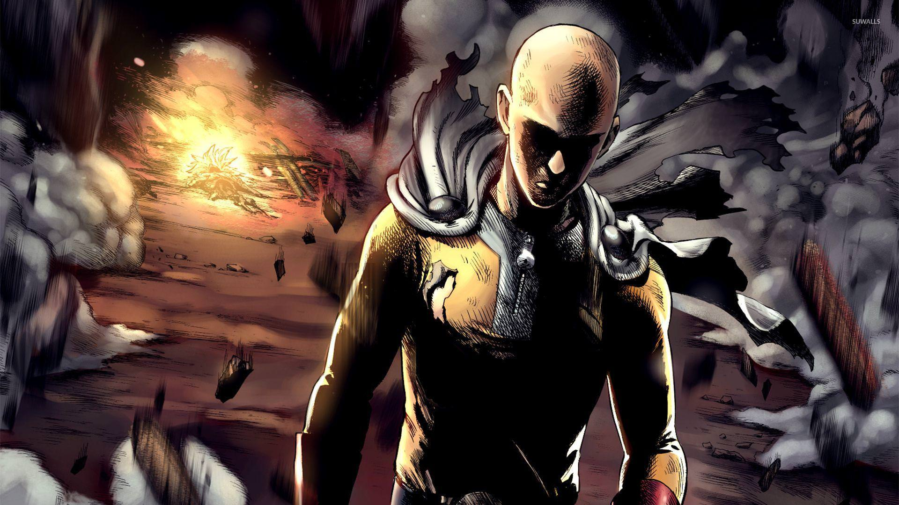
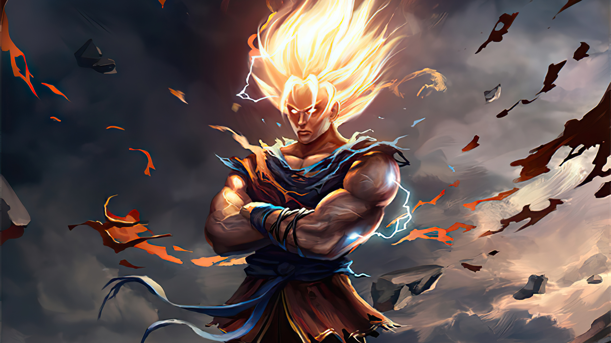

BACK
Super Power Anime
1. One Punch Man:
About:
One-Punch Man is a Japanese superhero franchise created by the artist ONE. It tells the story of Saitama, a superhero who can defeat any opponent with a single punch but seeks to find a worthy opponent after growing bored by a lack of challenge due to his overwhelming strength ANIME
Plot:
In this new action-comedy, everything about a young man named Saitama screams "AVERAGE," from his lifeless expression, to his bald head, to his unimpressive physique. However, this average-looking fellow doesn't have your average problem.... He's actually a superhero that's looking for tough opponents! The problem is, every time he finds a promising candidate he beats the snot out of them in one punch. Can Saitama finally find an evil villain strong enough to challenge him? Follow Saitama through his hilarious romps as he searches for new bad guys to challenge!

IF YOU WANNA DOWNLOAD "ONE PUNCH MAN"
CLICK HERE
2. Dragon Ball Super:
About:
Reuniting the franchise's iconic characters, Dragon Ball Super will follow the aftermath of Goku's fierce battle with Majin Buu as he attempts to maintain the earth's fragile peace. In the adventure, Goku will face Gods and Angels. He will also attend some new forms during the adventures to save the earth.

Plot:
This anime is divided in many sagas. It has Freiza saga, Cell saga & Buu saga. Even there is more. This time, Goku is back with his new son, Gohan. Goku almost thought that everything has become normal. But it is not the end of his adventures. Now the enemies are even more powerful than before. He is facing powerful enemies such as Frieza, Cell, or Buu, Goku is proven to be an elite of his own and discovers his race, Saiyan and is able to reach Super Saiyan 3 form. He meets many new people, gaining allies and well as enemies, as he still finds time to raise a family and be the happy-go-lucky Saiyan he is.
IF YOU WANNA DOWNLOAD " DRAGON BALL SUPER SEASON 1"
CLICK HERE